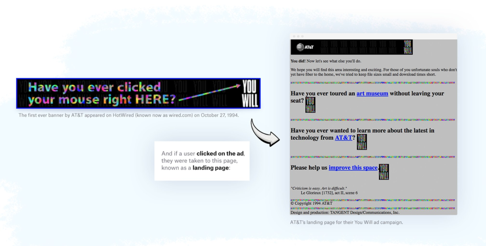
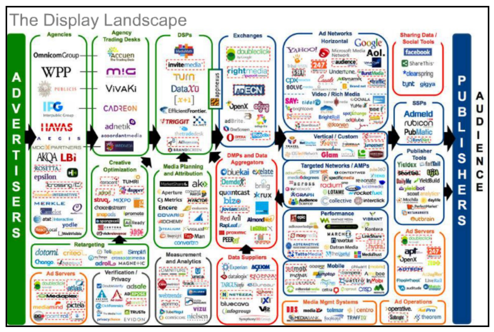

We discussed the following topics in the last session
Conjoint analysis: products as bundles of attributes and levels
Partworths estimated with dummy-variable regression · attribute importance
From preferences to choices: first choice, share of preference and logit rules
Market simulations: new products, new entrants and cannibalization
Segmentation with conjoint: individual-level partworths + k-means
Dream Destinations game: from a survey to a market-share competition
Analytical approach to marketing
Consumer Data
Statistical Analysis
Descriptive Analysis
Predictive Analysis
Causal / Inferential Analysis
Optimization →
Product
Price
Promotion
Place (distribution)
Discuss: How was the content of each session we had related to the 4P?
Today’s agenda
I · Online advertising
The players and their incentives · programmatic auctions · pricing models: CPM, CPC, CPA
II · Targeting
Demographic, contextual and behavioral targeting · retargeting and the funnel · targeting with less tracking
III · Predictive analytics
Bias–variance trade-off · validation · logistic regression and log loss · CART and XGBoost · RIG and AUC
Online advertising
Part A
How does online advertising work?
The first banner ad (1994)

❓ What click-through rate did this ad get?Closest guess wins a silver coin 🥈
44%of viewers clicked it over its three-month life
❓ What is a typical click-through rate today?Think of the last banner you clicked…
0.02% – 2%of ads that online visitors click today (estimate)
An industry with many players

The display landscape: dozens of intermediaries sit between the advertiser and the publisher
Who does what?
Buy side
Advertisers — brands that pay for attention (Coca-Cola, Nike, Apple)
Agencies & trading desks — run campaigns for brands (WPP, Publicis)
DSPs — buy impressions automatically across many publishers (Google DV360, The Trade Desk, Amazon DSP)
Sell side
Publishers — sites and apps with ad space (NYT, YouTube, mobile games)
SSPs — help publishers sell their inventory (Google Ad Manager, Magnite, PubMatic)
Ad networks — bundle supply from many publishers (AdSense, Taboola, Outbrain)
Marketplaces
Ad exchanges — real-time auctions between DSPs and SSPs (Google AdX, OpenX)
Walled gardens & retail media — sell their own audiences directly (Meta, Amazon Ads, Walmart Connect)
Ad servers — deliver the creative and log the impression
Data & measurement
Data providers / CDPs — audience data for targeting (Experian, Acxiom, Adobe)
Measurement & attribution — which ad caused the sale? (Google Analytics, Nielsen)
Verification — real humans, brand-safe context (DoubleVerify, IAS)
Each player takes a cut and has its own incentive. Keep asking: who pays, who gets paid, and for what?
Programmatic advertising: an auction for every impression
Ad exchanges and ad networks are mostly auction-driven marketplaces that trade in real time
1User opens an appThe publisher has an empty ad slot: an impression is for sale
2Bid requestThe SSP / ad network sends the context: app, time, device, user ID (if any)
3Advertisers predictEach DSP estimates the chance this user clicks or buys, and bids
4AuctionThe exchange picks the highest bid; the winner pays (first- or second-price rules)
5Ad is shownThe winning creative loads, impression and click are logged
All of this happens in about 100 milliseconds, billions of times per day
Step 3 is a prediction problem. A sensible bid is Pr(click) × value of a click, so better predictions mean better bids.
Live: an auction for every impression
Incoming impressionNext in line
What the user sees
Advertiser
Won
Clicks
CTR
Spend
Profit
Bid = Pr(click) × value of a click = what this one impression is worth (platforms often quote it per 1,000 impressions, the CPM). Highest bid wins and pays the runner-up’s bid. Illustrative numbers.
Online ad pricing models
CPM
Cost per mille: price per 1,000 impressions
Pays for visibility
Typical for awareness campaigns
CPC
Cost per click: pay only when the user clicks
Pays for engagement
Search ads, most ad networks
CPA
Cost per acquisition: pay only when the user converts
Pays for outcomes (sale, sign-up, install)
Affiliate and performance deals
Discuss: which model makes more sense for the publisher? For the advertiser? Who bears the risk that nobody clicks?
Targeting
Part B
Showing the right ad to the right person
Three types of targeting
Demographic
Who are you?
Age, gender, location, income…
Without IDs, vendors infer these with probabilistic models
2Learn \(\hat f\)Choose the function that fits these examples well
3PredictApply \(\hat f\) to new \(x\): Pr(click) for each new impression
4ActBid, target, allocate the impression
How flexible should \(\hat f\) be?
Toy example with one feature \(x\): training dots = a true curve (dashed) + noise
Loss function \(\ell_i = \big(y_i - \hat f(x_i)\big)^2\): scores one prediction (for regression, the squared error)
Model’s loss (the objective) \(\text{MSE} = \frac{1}{N}\sum_i \ell_i\): the average over all \(N\) examples. This is what OLS minimizes
The more flexible \(\hat f\), the lower its training MSE, always. But our goal is new impressions. Which of the three would you trust on data it has never seen? Let us test it on the next slide.
Try it: fit on one sample, predict a new one
Orange dots: training sample (the model is fit on these). Green circles: a new sample. Dashed: the true relationship. Each “draw” fits the model to a new training sample. Error curves are averages over 40 samples.
The bias–variance trade-off
Complex model
Better prediction on in-sample data (low bias)
Less stable on a new sample: it fits the noise (high variance)
Simple model
Worse prediction on in-sample data (high bias)
More stable, and maybe better, on a new sample (low variance)
A good model has good out-of-sample prediction power
Build “knobs” into the estimation that control complexity: hyper-parameters
Tune the knobs on data the model did not see during estimation
Validation
Training
Validation
Test
Split the data into training, validation and test sets. Do not touch the test data!
For each candidate value of the hyper-parameters (a grid search, or smarter search algorithms)
Estimate the model on the training data, compute the loss on the validation data
Pick the hyper-parameters that do best on the validation data: this is your model
Predict on the test data once: this is the performance you can promise
One validation set is a small, noisy sample, and its data is never used for training. A better way: k-fold cross-validation (next slide).
k-fold cross-validation
Training data split into k = 5 folds (the test data stays aside)
Round 1Vscore₁
Round 2Vscore₂
Round 3Vscore₃
Round 4Vscore₄
Round 5Vscore₅
train on these folds · V = validate on this fold
Split the training data into \(k\) equal folds (e.g. 5)
Train on \(k - 1\) folds, compute the loss on the fold left out
Repeat so that each fold is left out once
CV score = the average of the \(k\) scores
Do this for every candidate hyper-parameter, plot the CV score, pick the best, then refit on all the training data
Every observation is used for validation exactly once, and the average of \(k\) scores is much less noisy than one validation set. The cost: training \(k\) times. You will tune your own trees this way in Assignment 5.
Two types of supervised learning problems
Regression (prediction)
Continuous outcomes: the value of \(y\) has meaning
How much did the consumer spend on our catalog?
How much do sales increase with advertising?
Classification
Discrete outcomes (binary or multi-class), no ordering between categories
Clicked on the ad or not?
Which brand did the consumer buy: A, B or C?
The tree methods we will see today (CART, boosting) work for both types
Today we focus on discrete outcomes: will this user click?
Will this user click? A straight line fails
Data: 14 users. \(x\) = the user’s past CTR (%), \(y = 1\) if they clicked our ad, 0 if not
We want \(\Pr(\text{click} \mid x)\): a number between 0 and 1
Try what we know, OLS: \(\hat y = -0.09 + 0.11\,x\)
The line predicts impossible values:
\(x = 0.5\%\;\Rightarrow\;\hat y = -0.04\) (below 0)
\(x = 11\%\;\Rightarrow\;\hat y = 1.10\) (above 1)
A line never flattens; a probability must level off at 0 and at 1
How can we solve this issue?
Logistic regression: a score, then squash it
Step 1. Keep the regression part: a linear score (any real number)
\[ z = \beta_0 + \beta_1 x \]
Step 2. Squash it into \((0, 1)\) with the sigmoid
Loss = one user; objective = the whole training set. User D alone is 73% of the total: confident mistakes dominate. (OLS did the same with squared loss: its objective was the MSE.)
Finding β: no formula, so search
OLS: a formula gives \(\beta\). Logistic regression: no closed form
Start anywhere and repeatedly nudge \(\beta_0, \beta_1\) downhill on \(L(\beta)\): gradient descent
Each tree is weak (shallow, 2–8 leaves); together they are strong
The learning rate \(\eta\) (e.g. 0.1) makes each step small: slower, but less overfitting
Hyper-parameters: number of trees \(M\), tree depth, \(\eta\). Too many trees overfit, so choose them on validation data
For clicks, XGBoost does the same with log loss: the “mistakes” are \(y_i - \hat p_i\), the same errors that drove gradient descent
Try it: boosting, step by step
Model so far: \(F_k(x)\)
Mistakes left \(r_i = y_i - F_{k-1}(x_i)\) and the new tree \(h_k\)
Example: CTR (%) of an ad by hour of the day. Each tree has at most 4 leaves.
How good is the model?
Part E
Evaluation metrics
Why not just accuracy?
Accuracy = share of impressions we classify correctly
Question: CTR is 1%. A lazy model predicts “no click” for everyone. What is its accuracy?
99%…and it never finds a single clicker
1,000 impressions
Predicted click
Predicted no click
Clicked
0
10
No click
0
990
Question: what is this table called? → a confusion matrix
Rare outcomes
Doing nothing already scores 99%
Ignores probabilities
0.51 and 0.99 count the same
Ignores costs
Every mistake counts the same
Better metrics: AUC (ranking) and RIG (probabilities)
AUC: Area Under the (ROC) Curve
Back to the confusion matrix: pick a threshold, and predictions above it are classified “click”
True positive rate (sensitivity): what share of the clickers do we catch?
\[ TPR = \frac{TP}{P} \]
False positive rate: what share of the non-clickers do we wrongly flag?
\[ FPR = 1 - TNR = \frac{FP}{N} \]
Predicted 1
Predicted 0
Actual 1 (P)
TP
FN
Actual 0 (N)
FP
TN
The lazy model of the previous slide: TPR = 0 and FPR = 0 at every threshold above 0.
Try it: draw the ROC curve
Reading the AUC
The trade-off: a low threshold (e.g. 0.1) catches all the clickers, but also flags many non-clickers. A high threshold does the opposite
The ROC curve plots TPR against FPR for every threshold; AUC is the area under it
Interpretation: AUC = the probability that a randomly chosen clicker gets a higher score than a randomly chosen non-clicker
0.5 = coin flip · 1.0 = perfect ranking · around 0.7 is a ball-park minimum; below that, predictive performance is poor
Advantages: threshold-free, and ideal when the goal is to rank or classify
Limit: AUC only cares about the order of the predictions, not their exact values. To check the probabilities themselves → RIG.
Relative Information Gain (RIG)
Like accuracy, raw log loss looks good when clicks are rare. So compare the model with the no-model benchmark: predict the average CTR \(\bar y\) for everyone
Average log loss of the model on \(N\) impressions (the objective from logistic regression):